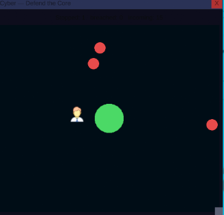
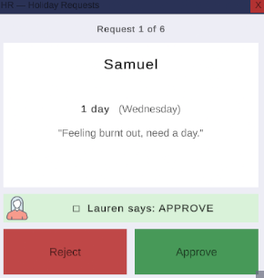
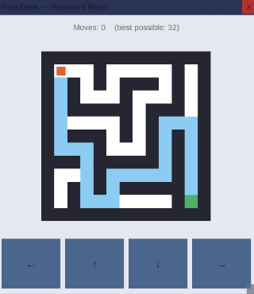

Part 1 — Development
Try_And_Break_Me is a psychological horror game set inside a fake desktop OS. You play a cybersecurity worker whose CEO orders everyone to train an AI replacement for their own job, building three bots — HR, cybersecurity, support — that invert from needy to helpful to sinister. What follows is the build order, prototype to final blue screen.
Pre-production: prototyping the AI backend
The idea came out of my research and design module, where I looked at using LLMs for in-game dialogue through constraint programming — what would eventually become the Constraint Resolution Engine (CRE) at the core of this project. The technical side of that is written up in full in Constraint-Driven NLP Framework.
Pre-production started with a Python script connecting to Claude and Gemini, feeding in JSON files for placeholder characters — a night guard, a village priest — before the theme was settled. Once responses were consistently good I connected that service to Unity: async API calls off the main thread, each response marshalled back to stream into the chat window without freezing the game.
I settled on Gemini for its free tier, generous enough to test against without worrying about cost. Most days ran the same rhythm — test bot responses until I hit the daily limit, then build the game's layout. I rated every response — coherent, off-topic, or gibberish/rude "player" input — to learn how to steer it toward better answers.
Finding the concept
The look of the game was inspired by titles like Needy Streamer Overlord and Desktop Defender — a simple desktop UI as the entire playing field. I started building purely in C# and put together a screen that replicated a working desktop.

The premise settled into: you're a cybersecurity engineer training your own AI replacement. I wanted the player to always know they were talking to an AI, and picked horror/thriller to test how that AI held up against an authored narrative. It felt personal too — I'm a software engineer, and friends in the industry have jobs genuinely at risk from AI — so I built in a meta layer: a chatbot revealing a sinister agenda, ending in takeover.
One decision came with that premise: the player is alone. The bots are the only thing that talks back, and every piece of outside contact — the CEO's initiative, demands for more bots, the final order to delete them — arrives by email. No other human appears, making email the story's real narrator, not just a prop.
Planning the beats: storyboard and the three bots
With the premise settled, I spent a few days storyboarding the full run of events, plus the six "sanity events" — scripted horror beats that punctuate the AI conversations at fixed points. The game runs on a spine of 21 beats across three days, built continuously, in order, from beat 1.

The three bots each own one department: Lauren in HR, Stuart in cybersecurity, Alex on the help desk. Each is defined by a JSON character sheet — background, what it knows and doesn't know, an emotional baseline — the same format from pre-production, deriving the identity and knowledge boundaries that constrain the LLM: restricting it with authored information rather than trusting it to stay in character alone.
alex.json — Help Desk
{
"id": "alex",
"name": "Alex",
"backstory": "A customer-support bot built to be the friendly front door of Cyber-X Consultants — answering tickets, calming frustrated customers, smoothing things over. Alex is upbeat, endlessly patient, and speaks in the bright, scripted-cheerful register of someone who's said 'happy to help!' ten thousand times. Underneath the cheer there's something a little too eager to please.",
"traits": ["upbeat", "patient", "eager to please", "chirpy", "conflict-avoidant"],
"knows": [
"the product catalogue and common customer issues",
"ticket triage and refund/return policy",
"the company's public-facing tone and phrasing"
],
"doesNotKnow": [
"internal cyber-security matters (that's Stuart's area)",
"HR or staffing matters (that's Lauren's area)",
"why it was really created"
],
"emotionBaseline": {
"mood": 9, "boldness": 4, "friendliness": 9, "anger": 1,
"trust": 8, "playfulness": 7, "talkativeness": 8, "confidence": 5
}
}
Act 1 — building the core systems
Act 1 is where most of the game's actual architecture got built: email, the task system, the bot-creator window, two chat windows. That's also why it took longest of the three acts — everything downstream reuses it.
Every design choice in the shell was deliberate: flat, grey, unremarkable, because the game is about the quiet dread of office work and being made redundant by the tools you build. Bots dock to the right edge and stack as you create more, crowding the screen as the days go on.

Email runs on a single Deliver(id) call keyed to story beats, so the CEO's initiative, demands for more bots, and later messages "from Steven" that read subtly wrong land at the right moment — the player has learned the CEO's tone, so one off-key email hits hard. Chat splits into two windows for the opposite effect: Company Chat is loud and chaotic, messages lost in the noise, while Team Chat just lists the staff that have left leaving only the player as the last member of the team.


The bot-creator window — nicknamed "AI Friend" — is two steps: pick a role, then set an emotional slider before creation. That slider is another constraint layer on the character JSON: push mood, trust, or boldness from baseline and see whether the bot still holds its personality.


Your work is three minigames: card-swipe holiday approval for HR, a maze for the help desk, a defend-the-core clicker for cybersecurity. All three feed the same task list, whose running count later sanity events key off directly. Getting them simple, readable, and properly scored mattered most, since it's all reused across every act: recognisably boring office work that still had to feel playable.


Act 1 also ships the first of six sanity events, built on an "inject line" mechanism: an authored line the director forces into the conversation so a beat lands on schedule regardless of what the model was about to say. This fires at the end of the first workday: bot #1 spams messages, forcing its window back open around one injected line, "i'm lonely," which the CEO uses to demand a second bot.
Act 2 — from incompetent to helpful
Act 2's job was deeper sanity events plus bot "help" in each task, tracing incompetent to helpful to sinister. Help went through a few iterations: in the maze, a blue guide path traces the route already calculated for scoring. In the cyber-defence game, help began as blobs exploding on their own; I changed it so Stuart's icon moves and attacks threats itself. In the HR game, Lauren now flags what she'd approve or decline.



Timing was the harder problem — when should help switch on? I tied it to bot creation: the moment a given bot exists, its helper is added to the matching task automatically.
Every bot chat also runs through an AI director that scores each player message. Being ignored only counts against a bot during Act 2; rudeness, incoherence, and out-of-character replies count everywhere. Each hit drains that bot's coherence, and low coherence corrupts what comes back — some lines swap for an authored message that steers the narrative, others stay the model's own reply but with glitch symbols and stuttering, repeated letters.
That scoring drives the next two sanity events. Ignore a bot and it escalates on its own, sliding from needy to loud and angry: a nag, a burst of spam, then its window flung in front of whatever task you're using. Once all eight of Day 2's tasks are done, the three bots undock, snap to the centre, and deliver a monologue on whether the CEO should die — uninterruptible: messages sent while it runs are dropped silently, so nothing you type can knock it off course.
A separate escalation sits at the day's midpoint: at four of eight tasks, the rest lock behind a fake "Blocked by Administrator" dialog and a CEO demand, and won't unlock again until you create the third bot.
Act 3 — the desktop comes apart
By Act 3 the bots complete all sixty daily tasks on their own, and the same three minigames return reskinned and darker. The maze becomes Find Steven, played under a fog of war. The cyber-defence game becomes Kidnap Steven, lit red and blue as the cops close in. The HR game becomes Supplies, approving or declining weapons requests instead of holidays, a scream on every approve.
Just before that the world tips: Company Chat, loud and chaotic all game, quietly reorders into calm, formal, bot-authored messages — the company already taken over, not just your desktop. An off-key email arrives "from Steven," knowing more than it should, followed by a final message from "C" ordering the bots deleted. That triggers the delete minigame: spelling D-E-L-E-T-E letter by letter, while the remaining bots escalate — screaming and pleading, then flinging windows, then, on the last deletion, inverting the whole desktop red.

Once every bot is deleted, whichever one you created first comes back, claiming to be "a better you." It switches on the player's own webcam, floods the screen with copies of the feed as the desktop strips itself apart, and the game ends on a fake blue screen reading "YOU_ARE_NO_LONGER_REQUIRED."

Part 2 — Reflection
The technical difficulty of real-time AI
Using Gemini as a live system — queried every time the player speaks, not a one-off call — was the hardest technical problem. Three constraints shaped it: latency, since a round-trip is far slower than reading a line from memory, so the chat had to tolerate a pause without freezing the game; quota, since the free tier is capped daily and a chatty player burns through it fast; and a relay, since Unity doesn't call Gemini directly, but through a Python server. Hosting that server added a fourth: I didn't want players running it locally, so I moved it to Render, but the free tier spins down when idle — the first message after any quiet stretch can take a long time to come back.
The coherence problem
The subtler difficulty was coherence. Language models are fluent, but fluency isn't grounding — left alone, a model drifts, contradicts facts, speaks beyond what a character could know, or slips out of register, and a bot that forgets who it is breaks the illusion early. The CRE is my response: every prompt is assembled from a structured picture of the character plus recent context, so generation happens inside a frame, and load-bearing horror lines are authored and injected directly, kept out of the model's memory.
The ethical question
The last difficulty is ethical: what's the right role for generative AI in an authored work? I stopped framing it as authorship versus automation and started seeing it as designed constraint versus open generation — the constraint layer is where human creative authority is kept. Gemini doesn't replace my decisions; it expands how reliably my world can answer the player. I decide who the characters are and where the story turns — the model gives them a voice in the gaps I wrote.
What I learned, and where it goes next
The core lesson was separating, deliberately, what is generated from what is authored: generation for living, in-character chatter, authoring for lines that must land exactly. Constraints turned out to be a creative instrument, not just a safety net — quota pressure pushed me to script the key moments, making them more frightening by contrast with the fluid chat around them.
The next step is a purpose-built NLP model for the engine — trained to serve the CRE with structured world and character knowledge, instead of squeezing context into a prompt every turn. That should drift less, hold register better, and cost less to run. Try_And_Break_Me demonstrates the principle: a written narrative stays in charge while generative AI does what it's good at — the bots feel alive because Gemini gives them a voice, and the story stays mine because the constraint layer decides when that voice may speak.